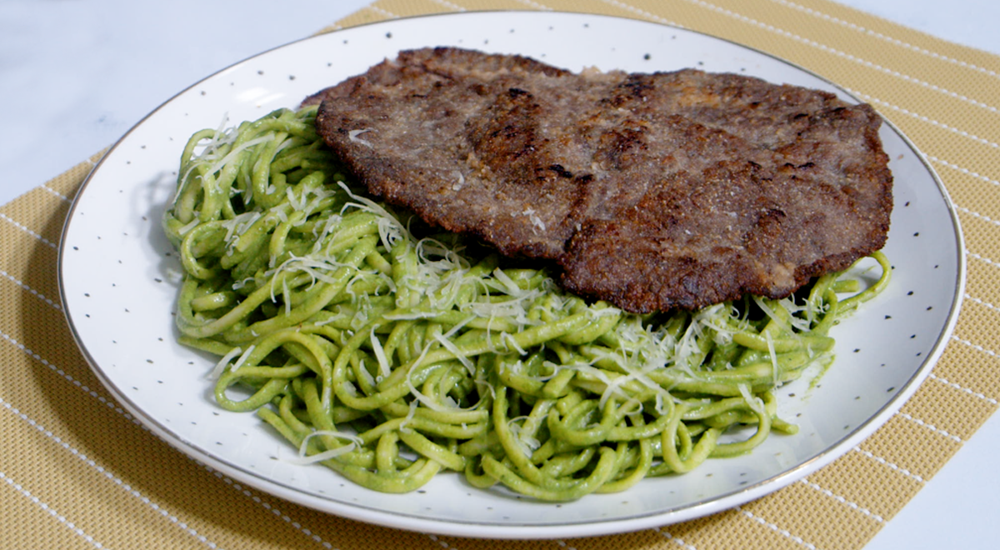

Los fideos verdes, también conocidos como tallarines verdes, son un plato tradicional de la gastronomía peruana. Su origen está relacionado con la llegada de inmigrantes italianos al Perú, quienes trajeron sus costumbres, ingredientes y recetas. Con el paso del tiempo, la cocina peruana fue adaptando esta preparación a sus propios sabores e ingredientes, creando una receta muy popular en el país.
Su característica principal es su salsa de color verde, que se prepara principalmente con albahaca y espinacas. También se utilizan ingredientes como queso, leche, ajo y aceite, que ayudan a conseguir una salsa cremosa y llena de sabor. Normalmente, se sirven acompañados de carne, pollo o incluso un huevo frito. Actualmente, los tallarines verdes son una comida muy conocida y apreciada en muchos hogares peruanos.
En mi casa, la comida la prepara principalmente mi familia, especialmente la persona que se encarga habitualmente de cocinar. Para preparar los fideos verdes, primero se reúnen todos los ingredientes necesarios, como los fideos, la albahaca, las espinacas, el queso y la leche.
En mi casa se preparan los fideos verdes principalmente durante los almuerzos familiares, cuando tenemos ganas de disfrutar de una comida rica y compartir en familia.